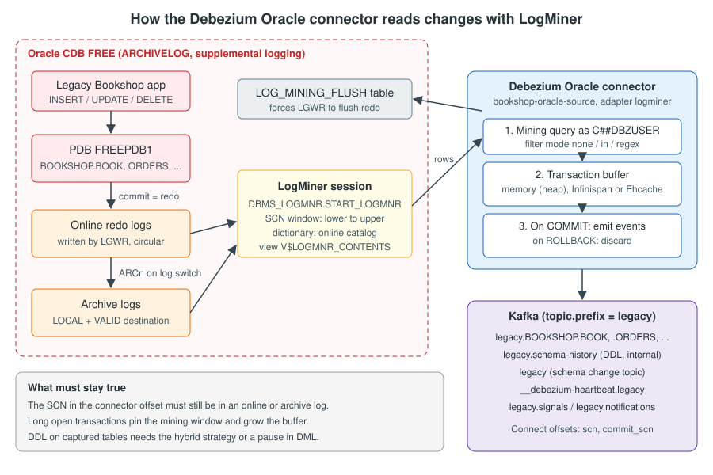

Oracle Connector
|
This content was generated with the assistance of AI and should be verified against the official documentation before being relied on in production. |
In the Bookshop migration the legacy Java EE application writes to a single Oracle schema, BOOKSHOP, and that schema
is the source of truth until the cut-over. Everything downstream (the JDBC sink that fills the PostgreSQL mirror tables,
the anti-corruption layer in the new Spring Boot bookshop application, the reconciliation jobs) depends on one
component: the Debezium Oracle connector, which reads Oracle’s redo and archive logs and turns every committed
change in BOOKSHOP into an event on a Kafka topic. Oracle is also the most demanding of the Debezium source
connectors. It needs database-level preparation that only a DBA can do (archive logging, supplemental logging, a common
user with LogMiner privileges), it buffers transactions in the connector’s memory, and its offsets are system change
numbers (SCNs) that stay valid only while the matching logs exist. A mistake in any of these is not reported when the
connector is registered. It shows up hours or days later as missing events, an ORA- error or a connector that cannot
restart.
This page explains how the connector works, how to prepare Oracle for it, and how to configure it for a migration. It
shows the complete SQL for the lab database and the complete bookshop-oracle-source connector configuration, and
explains each choice in it. The end-to-end pipeline (sinks, the new application, verification) is in
Worked Example: Oracle to PostgreSQL. The phases of the
migration that this connector feeds are in Migration Patterns
with CDC.
Checked on 2026-11-09 against Debezium 3.7.1.Final, with Oracle AI Database 26ai Free (image
gvenzl/oracle-free:23.26.3, the 23.26 release line that succeeds Oracle Database 23ai Free), the
quay.io/debezium/connect:3.7.1.Final and quay.io/debezium/kafka:3.7.1.Final images (Kafka 4.3.1 in KRaft mode) and
the Oracle JDBC driver ojdbc11 23.26.1.0.0. The configuration on this page is derived from the official
documentation. The settings that it shares with the worked example (the converters, decimal.handling.mode, the signal
table name and the grants on the signal table) were run with Docker on 2026-11-09 as part of the
Worked Example: Oracle to PostgreSQL, which runs the
whole stack. The other sections (RAC, standby, Ehcache, XStream, OpenLogReplicator) were not run.
How the connector captures changes
Oracle writes every change to its redo log before the change is committed: the log writer process (LGWR) appends change vectors to the online redo log files, which are reused in a circle. When a redo log file fills up, Oracle switches to the next one and, in ARCHIVELOG mode, an archiver process (ARCn) copies the full file to one or more archive log destinations. The redo stream is the only complete record of what happened in the database, in commit order, and it already exists for recovery. Reading it adds no triggers and no extra writes to the legacy tables, and no changes to the legacy application. This is why log-based CDC is the safer choice for a database whose application cannot be changed, as explained in Data synchronisation during the overlap.
A redo entry does not hold SQL. It holds change vectors and object identifiers: a tablespace, an object number and
column numbers. Something has to translate them back into "row 42 of BOOKSHOP.BOOK changed PRICE from 12.50 to
14.00", and it has to know which changes belong to transactions that later commit and which ones are rolled back. The
connector delegates the reading of the logs to an adapter, and it does the rest itself: it applies the
include/exclude filters, keeps the in-memory schema model, builds the change events and records the SCN offsets.

The figure shows the default logminer adapter. In each mining step the connector does the following:
-
It reads the current SCN and chooses the online and archive logs that cover the range between its last position and the current SCN (at least
log.mining.log.count.minlogs per redo thread, 2 by default). -
It starts a LogMiner session over those logs with
DBMS_LOGMNRand queries theV$LOGMNR_CONTENTSview asC##DBZUSER. LogMiner resolves object numbers to table and column names with the data dictionary chosen by the mining strategy. -
It adds every DML row of a captured table to a per-transaction buffer. It does not emit anything yet, because Oracle interleaves the operations of concurrent transactions and some of them will be rolled back.
-
When it reads the
COMMITof a transaction, it turns the buffered rows into change events and hands them to Kafka Connect. When it reads aROLLBACK, it discards them. -
It records two SCNs in the offset:
scn, the low watermark from which mining must restart (the start of the oldest transaction that is still open), andcommit_scn, the position of the last commit that was emitted.
To force LGWR to write its in-memory redo to disk before each step, the connector writes to a small table,
LOG_MINING_FLUSH, which it creates in the connector user’s default tablespace. This is why the connector user needs
CREATE TABLE and a quota.
The same loop as a sequence diagram:
Reference: Debezium — How the Oracle connector works
Adapters: LogMiner, OpenLogReplicator and XStream
The property database.connection.adapter chooses how the connector reads the logs. The four values in Debezium 3.7
are listed below.
| Value | How it reads changes | Main cost | Use it when |
|---|---|---|---|
|
Oracle LogMiner returns committed and uncommitted changes. The connector buffers each transaction until its commit or rollback ("uncommitted changes mode"). |
Connector memory: the buffer must hold the largest and the most concurrent transactions. |
Almost always. It needs no extra licence and no extra software, and it puts the least load on the database. |
|
LogMiner returns only committed changes, so the connector can forward them at once without a buffer ("committed changes mode"). |
Database memory: large transactions can exceed the PGA and fail with |
Only if you can guarantee that every transaction fits in the database’s PGA, and the connector host is the constraint. |
|
OpenLogReplicator, a separate open-source C++ process, reads the redo and archive files directly and streams transactions to the connector over the network. Incubating. |
You build and run OpenLogReplicator yourself, with file access to the logs. No ROWID in the events. |
LogMiner overhead on the database is the problem and you can operate another process next to Oracle. |
|
The Oracle XStream API of Oracle GoldenGate. The database pushes logical change records from an outbound server. |
Requires a GoldenGate licence (GoldenGate itself does not have to be installed), the OCI driver, Instant Client
and |
The organisation already licenses GoldenGate, or a downstream mining database is needed (it is supported only with XStream). |
For a legacy-to-modern migration the default logminer adapter is the right starting point. It needs nothing beyond
what a DBA can grant, and every other section of this page assumes it. The other adapters change how changes are
read, but not the events: the topics, the event format and the rest of the pipeline stay the same, so you can switch
adapters later without changing any consumer.
Switching to OpenLogReplicator adds three properties. openlogreplicator.source is the source.name element of the
OpenLogReplicator JSON configuration, and the other two are its network endpoint:
{
"database.connection.adapter": "olr",
"openlogreplicator.source": "ORACLE",
"openlogreplicator.host": "openlogreplicator",
"openlogreplicator.port": "9000"
}Switching to XStream adds the name of the outbound server that the DBA created with DBMS_XSTREAM_ADM, and requires
a database.url with the jdbc:oracle:oci:@ prefix. The thin driver fails with
ORA-17023: Unsupported feature: getOCIHandles.
{
"database.connection.adapter": "xstream",
"database.url": "jdbc:oracle:oci:@(DESCRIPTION=(ENABLE=broken)(ADDRESS_LIST=(ADDRESS=(PROTOCOL=TCP)(HOST=oracle)(PORT=1521)))(CONNECT_DATA=(SERVICE_NAME=FREE)))",
"xstream.out.server.name": "dbzxout"
}Reference: Debezium — Oracle connector, XStream support
Two facts that older articles get wrong. Oracle deprecated only the continuous mining option of LogMiner (in 12c) and removed it in 19c. LogMiner itself is not deprecated, and the connector never used continuous mining. Debezium 3.7 also removed its remaining support for continuous mining.
Reference: Debezium — Oracle connector, Adapter modes
Preparing the Oracle database
The official setup assumes the multitenant architecture: a container database (CDB) with at least one pluggable
database (PDB). Oracle AI Database 26ai Free in the gvenzl/oracle-free image follows it. The CDB is FREE and the PDB
is FREEPDB1, so archive logging and the connector user are configured in the CDB root, and the BOOKSHOP tables live
in FREEPDB1. On a non-CDB database you leave out database.pdb.name and the CONTAINER=ALL clauses.
The connector also ignores some things completely. It excludes tables in the Oracle-maintained schemas (SYS,
SYSTEM, MDSYS, XDB, VECSYS on 23ai and later, and others), nested tables, index-organized overflow tables (SYS_IOT_OVER_%)
and spatial and compression-advisor helper tables. If a legacy table matches one of those names, it has to be renamed
before it can be captured.
Reference: Debezium — Setting up Oracle
The lab container
The compose file below starts only the three services that this page needs: Oracle, Kafka in KRaft mode and Kafka Connect with the Debezium connectors. Oracle Database Free is a heavy image (several gigabytes, and two minutes or more for the first start), so give Docker at least 4 GB of memory. The full stack with PostgreSQL, Apicurio Registry and the new application is in the worked example.
services:
oracle:
image: gvenzl/oracle-free:23.26.3
environment:
ORACLE_PASSWORD: top_secret
ports:
- "1521:1521"
volumes:
- oracle-data:/opt/oracle/oradata
- ./oracle:/scripts:ro
healthcheck:
test: ["CMD", "healthcheck.sh"]
interval: 10s
timeout: 5s
retries: 30
kafka:
image: quay.io/debezium/kafka:3.7.1.Final
hostname: kafka
environment:
CLUSTER_ID: 5Yr1SIgYQz-b-dgRabWx4g
NODE_ID: "1"
NODE_ROLE: combined
KAFKA_CONTROLLER_QUORUM_VOTERS: 1@kafka:9093
KAFKA_LISTENERS: PLAINTEXT://kafka:9092,CONTROLLER://kafka:9093
KAFKA_ADVERTISED_LISTENERS: PLAINTEXT://kafka:9092
connect:
image: quay.io/debezium/connect:3.7.1.Final
depends_on:
- kafka
- oracle
ports:
- "8083:8083"
environment:
BOOTSTRAP_SERVERS: kafka:9092
GROUP_ID: "1"
CONFIG_STORAGE_TOPIC: connect_configs
OFFSET_STORAGE_TOPIC: connect_offsets
STATUS_STORAGE_TOPIC: connect_statuses
volumes:
oracle-data:The oracle-data volume matters. ARCHIVELOG mode and the recovery area are stored in the database files, so a
container that is recreated without the volume loses the preparation below. The ./oracle directory holds the SQL
scripts of the next sections, and healthcheck.sh is a script that the gvenzl image provides.
The Oracle JDBC driver is not part of the Debezium Oracle connector plug-in archive, because of Oracle’s licence terms.
The quay.io/debezium/connect:3.7.1.Final image already contains it: the /kafka/connect/debezium-connector-oracle
directory holds ojdbc11-23.26.1.0.0.jar, together with orai18n, xdb and xmlparserv2. If you install the
connector into a plain Kafka Connect distribution or build a Strimzi KafkaConnect image (see
Running on Kubernetes), add ojdbc11.jar to the connector’s
plug-in directory yourself. The following Dockerfile shows the pattern for a custom image that pins a different driver
version from Maven Central:
FROM quay.io/debezium/connect:3.7.1.Final
ARG OJDBC_VERSION=23.26.1.0.0
RUN rm -f /kafka/connect/debezium-connector-oracle/ojdbc11-*.jar \
&& curl -fsSL -o /kafka/connect/debezium-connector-oracle/ojdbc11-${OJDBC_VERSION}.jar \
https://repo1.maven.org/maven2/com/oracle/database/jdbc/ojdbc11/${OJDBC_VERSION}/ojdbc11-${OJDBC_VERSION}.jarReference: Debezium — Obtaining the Oracle JDBC driver
You can check which driver a Connect image contains without starting it:
docker run --rm --entrypoint ls quay.io/debezium/connect:3.7.1.Final \
/kafka/connect/debezium-connector-oracleReference: Debezium — Oracle connector deployment
Step 1: ARCHIVELOG mode and the recovery area
Without ARCHIVELOG mode Oracle overwrites online redo logs as soon as they are reused, and changes that the connector
has not read yet are lost. In ARCHIVELOG mode every full log is copied to an archive destination first. The fast
recovery area is the simplest destination. Changing the log mode needs a restart into the MOUNT state, so it is done
as SYSDBA in the CDB root. On a production legacy database this is a planned DBA change with a maintenance window,
and it is usually the first item on the migration plan.
-- Check the current mode first: LOG_MODE is NOARCHIVELOG or ARCHIVELOG
SELECT log_mode FROM v$database;
ALTER SYSTEM SET db_recovery_file_dest_size = 10G;
ALTER SYSTEM SET db_recovery_file_dest = '/opt/oracle/oradata/recovery_area' SCOPE=SPFILE;
SHUTDOWN IMMEDIATE
STARTUP MOUNT
ALTER DATABASE ARCHIVELOG;
ALTER DATABASE OPEN;
-- FREEPDB1 is not always opened automatically after a restart
ALTER PLUGGABLE DATABASE ALL OPEN;
-- Should now report "Database log mode: Archive Mode"
ARCHIVE LOG LISTReference: Debezium — Preparing the database
Create the recovery area directory and run the script inside the container. sqlplus / as sysdba connects to the CDB
root through the container’s ORACLE_SID:
docker compose exec oracle mkdir -p /opt/oracle/oradata/recovery_area
docker compose exec oracle sqlplus / as sysdba @/scripts/01-archivelog.sqlReference: Debezium — Preparing the database
The size of the recovery area sets how much archive log history fits on disk, and that history sets how long the connector can be stopped before its offset falls out of the logs. Agree on a retention with the DBA (RMAN deletion policy, backup schedule) that is longer than your longest planned connector outage plus a safety margin. The FAQ entry on missing SCNs, later on this page, shows what happens when it is not.
Step 2: supplemental logging
By default the redo log records only the columns that a statement changed, plus what Oracle needs for recovery.
Debezium needs more. To build a full before and after image of an updated row, and to identify the row by its
primary key, the redo must contain all the columns. That is supplemental logging. It is enabled at two levels:
-
Minimal supplemental logging at the database level (in the CDB root) is required. Without it LogMiner cannot reliably reconstruct some operations, and the FAQ lists
ORA-00600with argument[flg0]as a symptom. -
All-column supplemental logging per captured table (in the PDB) gives complete
beforeimages. It increases the redo volume of those tables, so enable it only for the tables that you capture, not for the whole database.
ALTER DATABASE ADD SUPPLEMENTAL LOG DATA;
-- SUPPLEMENTAL_LOG_DATA_MIN should now be YES
SELECT supplemental_log_data_min FROM v$database;Reference: Debezium — Preparing the database
The per-table statements come after the tables exist, in the BOOKSHOP script below.
Step 3: archive log destinations and redo sizing
The connector reads archive logs only from destinations that V$ARCHIVE_DEST_STATUS reports as VALID and LOCAL.
Legacy production databases often have several: the local recovery area, a Data Guard standby, a backup copy on other
storage. If more than one destination qualifies and you do not choose one, the connector picks one at random, and it
can fail when that destination’s retention has already removed the log that it needs. List the destinations and set
archive.destination.name to the DEST_NAME (not the path) of the one with the longest retention:
SELECT dest_id, dest_name, status, type, destination
FROM v$archive_dest_status
WHERE status = 'VALID' AND type = 'LOCAL';Reference: Debezium — Archive log destinations
{
"archive.destination.name": "LOG_ARCHIVE_DEST_1"
}Reference: Debezium — Archive log destinations
When the primary and a standby use different destination names, the property takes a comma-separated list in order of
preference (for example LOG_ARCHIVE_DEST_2,LOG_ARCHIVE_DEST_5), so that the connector needs no change after a
failover.
The online redo logs must also be large enough. They must be able to hold the data dictionary, which grows with the number of tables and columns, and small logs switch so often that each mining step has to reopen many files. A quick look at the current groups and the switch rate tells the DBA whether to add larger groups:
SELECT group#, thread#, bytes / 1024 / 1024 AS size_mb, members, status FROM v$log;
SELECT TRUNC(first_time, 'HH') AS hour, COUNT(*) AS switches
FROM v$log_history
WHERE first_time > SYSDATE - 1
GROUP BY TRUNC(first_time, 'HH')
ORDER BY 1;Reference: Debezium — Redo log sizing
Step 4: the connector user C##DBZUSER
The connector connects to the CDB root to run LogMiner, and switches into the PDB to read table data during snapshots.
It therefore needs a common user. Common user names in a CDB must start with C##, and the user is created with
CONTAINER=ALL. The script below follows the official example: a LOGMINER_TBS tablespace in the root and in the PDB
(for the flush table and any other objects that the connector creates), the user, and the grants. Only the paths and
the PDB name are changed for Oracle Free.
-- Tablespace in the CDB root
CREATE TABLESPACE logminer_tbs DATAFILE '/opt/oracle/oradata/FREE/logminer_tbs.dbf'
SIZE 25M REUSE AUTOEXTEND ON MAXSIZE UNLIMITED;
-- Tablespace with the same name in the PDB
ALTER SESSION SET CONTAINER = FREEPDB1;
CREATE TABLESPACE logminer_tbs DATAFILE '/opt/oracle/oradata/FREE/FREEPDB1/logminer_tbs.dbf'
SIZE 25M REUSE AUTOEXTEND ON MAXSIZE UNLIMITED;
-- The common user and its grants are created in the root
ALTER SESSION SET CONTAINER = CDB$ROOT;
CREATE USER c##dbzuser IDENTIFIED BY dbz
DEFAULT TABLESPACE logminer_tbs
QUOTA UNLIMITED ON logminer_tbs
CONTAINER=ALL;
GRANT CREATE SESSION TO c##dbzuser CONTAINER=ALL;
GRANT SET CONTAINER TO c##dbzuser CONTAINER=ALL;
GRANT SELECT ON V_$DATABASE TO c##dbzuser CONTAINER=ALL;
GRANT FLASHBACK ANY TABLE TO c##dbzuser CONTAINER=ALL;
GRANT SELECT ANY TABLE TO c##dbzuser CONTAINER=ALL;
GRANT SELECT_CATALOG_ROLE TO c##dbzuser CONTAINER=ALL;
GRANT EXECUTE_CATALOG_ROLE TO c##dbzuser CONTAINER=ALL;
GRANT SELECT ANY TRANSACTION TO c##dbzuser CONTAINER=ALL;
GRANT LOGMINING TO c##dbzuser CONTAINER=ALL;
GRANT CREATE TABLE TO c##dbzuser CONTAINER=ALL;
GRANT LOCK ANY TABLE TO c##dbzuser CONTAINER=ALL;
GRANT CREATE SEQUENCE TO c##dbzuser CONTAINER=ALL;
GRANT EXECUTE ON DBMS_LOGMNR TO c##dbzuser CONTAINER=ALL;
GRANT EXECUTE ON DBMS_LOGMNR_D TO c##dbzuser CONTAINER=ALL;
GRANT SELECT ON V_$LOG TO c##dbzuser CONTAINER=ALL;
GRANT SELECT ON V_$LOG_HISTORY TO c##dbzuser CONTAINER=ALL;
GRANT SELECT ON V_$LOGMNR_LOGS TO c##dbzuser CONTAINER=ALL;
GRANT SELECT ON V_$LOGMNR_CONTENTS TO c##dbzuser CONTAINER=ALL;
GRANT SELECT ON V_$LOGMNR_PARAMETERS TO c##dbzuser CONTAINER=ALL;
GRANT SELECT ON V_$LOGFILE TO c##dbzuser CONTAINER=ALL;
GRANT SELECT ON V_$ARCHIVED_LOG TO c##dbzuser CONTAINER=ALL;
GRANT SELECT ON V_$ARCHIVE_DEST_STATUS TO c##dbzuser CONTAINER=ALL;
GRANT SELECT ON V_$TRANSACTION TO c##dbzuser CONTAINER=ALL;
GRANT SELECT ON V_$MYSTAT TO c##dbzuser CONTAINER=ALL;
GRANT SELECT ON V_$STATNAME TO c##dbzuser CONTAINER=ALL;The password dbz is the one in the official example and is fine for a lab. Use a generated secret anywhere else,
and pass it to Kafka Connect through a config provider rather than in the connector JSON, as described in
Security & Data Protection.
What each grant is for, and which ones you can narrow:
| Grant | Why the connector needs it | Can it be narrowed? |
|---|---|---|
|
Connect, and switch between the root and the PDB (CDB only). |
No. |
|
The initial snapshot reads each table with a flashback query |
Yes: grant |
|
Read the captured tables during snapshots. |
Yes: grant |
|
Read the data dictionary that LogMiner sessions use. |
No. |
|
Write the data dictionary to the redo logs, which is needed to track schema changes. |
No. |
|
Flashback snapshot queries against any transaction. Optional on 12c and later, where |
Keep it, as the official example does. |
|
Full access to LogMiner and its packages (newer Oracle versions). |
No. |
|
Create the |
No. |
|
Lock tables while the snapshot captures their structure. |
Not needed if |
|
Run LogMiner (granted through |
No. |
|
Read the state of redo logs, archive logs and transactions to prepare each mining session. |
No. Without them the connector cannot run. |
The official documentation is explicit about the limits. You may narrow SELECT ANY TABLE and FLASHBACK ANY TABLE to
the captured tables, but not the other grants. If you narrow them, the per-table grants must cover every table that
table.include.list matches, or the connector misses data. When a new legacy table is added to the capture, its
grants must be added first.
Step 5: the BOOKSHOP schema, supplemental logging per table, signal and heartbeat tables
The legacy schema of the running example is below, with the column names, types and flag encodings that the rest of the section relies on. In a real migration these tables already exist. Only the supplemental logging, the signal table and the heartbeat table are new.
ALTER SESSION SET CONTAINER = FREEPDB1;
CREATE USER bookshop IDENTIFIED BY bookshop
DEFAULT TABLESPACE users
QUOTA UNLIMITED ON users;
GRANT CREATE SESSION, CREATE TABLE TO bookshop;
CREATE TABLE bookshop.author (
author_id NUMBER(10) PRIMARY KEY,
full_name VARCHAR2(200) NOT NULL
);
CREATE TABLE bookshop.book (
book_id NUMBER(10) PRIMARY KEY,
isbn VARCHAR2(13),
title VARCHAR2(200),
author_id NUMBER(10), -- one author only: a legacy limitation
price NUMBER(10,2),
currency CHAR(3),
published DATE,
active_flg CHAR(1) DEFAULT 'Y' CHECK (active_flg IN ('Y', 'N')),
supplier_id NUMBER(10),
last_upd DATE
);
CREATE TABLE bookshop.customer (
cust_id NUMBER(10) PRIMARY KEY,
cust_name VARCHAR2(200),
email VARCHAR2(320),
status_cd CHAR(1) DEFAULT 'A' CHECK (status_cd IN ('A', 'I')),
created_dt DATE
);
CREATE TABLE bookshop.orders (
order_id NUMBER(12) PRIMARY KEY,
cust_id NUMBER(10),
order_dt DATE,
status_cd VARCHAR2(2) CHECK (status_cd IN ('NW', 'PD', 'SH', 'CN')),
total_amt NUMBER(12,2)
);
CREATE TABLE bookshop.order_line (
order_id NUMBER(12),
line_no NUMBER(4),
book_id NUMBER(10),
qty NUMBER(5),
unit_price NUMBER(10,2),
CONSTRAINT order_line_pk PRIMARY KEY (order_id, line_no)
);
CREATE TABLE bookshop.supplier_catalogue (
supplier_id NUMBER(10),
isbn VARCHAR2(13),
supplier_price NUMBER(10,2),
feed_ts TIMESTAMP,
CONSTRAINT supplier_catalogue_pk PRIMARY KEY (supplier_id, isbn)
);
-- Signal table: the source signaling channel (ad hoc and incremental snapshots)
CREATE TABLE bookshop.debezium_signal (
id VARCHAR2(42) PRIMARY KEY,
type VARCHAR2(32) NOT NULL,
data VARCHAR2(2048)
);
-- Heartbeat table: keeps the offset moving when the PDB is quiet
CREATE TABLE bookshop.debezium_heartbeat (
id NUMBER(1) PRIMARY KEY,
last_beat TIMESTAMP
);
INSERT INTO bookshop.debezium_heartbeat (id, last_beat) VALUES (1, SYSTIMESTAMP);
COMMIT;
-- All-column supplemental logging for every captured table
ALTER TABLE bookshop.author ADD SUPPLEMENTAL LOG DATA (ALL) COLUMNS;
ALTER TABLE bookshop.book ADD SUPPLEMENTAL LOG DATA (ALL) COLUMNS;
ALTER TABLE bookshop.customer ADD SUPPLEMENTAL LOG DATA (ALL) COLUMNS;
ALTER TABLE bookshop.orders ADD SUPPLEMENTAL LOG DATA (ALL) COLUMNS;
ALTER TABLE bookshop.order_line ADD SUPPLEMENTAL LOG DATA (ALL) COLUMNS;
ALTER TABLE bookshop.supplier_catalogue ADD SUPPLEMENTAL LOG DATA (ALL) COLUMNS;
ALTER TABLE bookshop.debezium_signal ADD SUPPLEMENTAL LOG DATA (ALL) COLUMNS;
ALTER TABLE bookshop.debezium_heartbeat ADD SUPPLEMENTAL LOG DATA (ALL) COLUMNS;
-- The connector writes snapshot watermarks to the signal table
-- (missing from the official grant list; without it: ORA-41900)
-- and runs the heartbeat action query
GRANT INSERT, DELETE ON bookshop.debezium_signal TO c##dbzuser;
GRANT UPDATE ON bookshop.debezium_heartbeat TO c##dbzuser;Reference: Debezium — Preparing the database and Debezium — Structure of a signaling data collection
Three details in this script come from the official pages and are easy to miss:
-
Unquoted Oracle identifiers are stored in upper case, so the tables are
BOOKSHOP.BOOK,BOOKSHOP.ORDERSand so on, and the connector creates upper-case topic names:legacy.BOOKSHOP.BOOK. If your Kafka platform requires lower-case topics, either pre-create them and route with the topic routing SMT (Debezium Transformations), or quote the names in Oracle. Never rename legacy tables only for this. -
The connector needs write access to the signal table, and the official grant list for
C##DBZUSERdoes not include it. Incremental snapshots open and close each chunk window by inserting watermark rows as the connector user (and delete them withincremental.snapshot.watermarking.strategy=insert_delete). Without the grant, anexecute-snapshotsignal is accepted and the snapshot then fails withORA-41900: missing INSERT privilege on "BOOKSHOP"."DEBEZIUM_SIGNAL", which is what the worked-example run hit first.GRANT INSERT, DELETEcovers both watermarking strategies. Only the MySQL, MariaDB and PostgreSQL connectors can run read-only incremental snapshots. -
The heartbeat action query runs as
C##DBZUSER, so the user needsUPDATE(orINSERT) on a table that it does not own.
The three scripts that run in the root or the PDB as SYSDBA can be run the same way as the first one:
docker compose exec oracle sqlplus / as sysdba @/scripts/02-supplemental-logging-cdb.sql
docker compose exec oracle sqlplus / as sysdba @/scripts/03-connector-user.sql
docker compose exec oracle sqlplus / as sysdba @/scripts/04-bookshop-schema.sqlReference: Debezium — Setting up Oracle
Step 6: verify the preparation
Before you register the connector, check every prerequisite from SQL. Each query below must return the value in its comment. If one doesn’t, the connector either fails at start-up or, worse, starts and emits incomplete events.
-- In CDB$ROOT: ARCHIVELOG, and minimal supplemental logging YES
SELECT log_mode, supplemental_log_data_min FROM v$database;
-- In CDB$ROOT: the common user exists in every container
SELECT username, common, con_id FROM cdb_users WHERE username = 'C##DBZUSER';
-- In FREEPDB1: every captured table has an ALL COLUMN log group
ALTER SESSION SET CONTAINER = FREEPDB1;
SELECT table_name, log_group_type
FROM dba_log_groups
WHERE owner = 'BOOKSHOP'
ORDER BY table_name;
-- In FREEPDB1: the BOOKSHOP tables are visible to the connector user
SELECT grantee, privilege FROM dba_sys_privs
WHERE grantee = 'C##DBZUSER' AND privilege IN ('SELECT ANY TABLE', 'FLASHBACK ANY TABLE');Reference: Debezium — Preparing the database
The dba_log_groups query should list eight tables with ALL COLUMN LOGGING.
Amazon RDS for Oracle
On Amazon RDS for Oracle you cannot log in as SYSDBA or run ALTER DATABASE, so the first two steps are done with
the rdsadmin package instead. The instance must have automated backups enabled, which puts it in ARCHIVELOG mode.
The connector user and its grants are created as the RDS master user. Some grants on SYS-owned objects go through
rdsadmin.rdsadmin_util.grant_sys_object, as described in the AWS documentation.
-- LOG_MODE must already be ARCHIVELOG (automated backups enabled)
SELECT log_mode FROM v$database;
EXEC rdsadmin.rdsadmin_util.set_configuration('archivelog retention hours', 24);
EXEC rdsadmin.rdsadmin_util.alter_supplemental_logging('ADD');The archivelog retention hours value is your recovery window for the connector. With 24 hours, a connector that is
stopped for more than a day cannot resume. Other managed Oracle offerings and their limits are compared in
Cloud Databases & Managed Kafka.
The bookshop-oracle-source connector
With the database prepared, the connector configuration is a single JSON document that you POST to the Kafka Connect
REST API. The configuration below is the one that the rest of the section uses. It captures the six legacy tables plus
the heartbeat table, writes to topics under the legacy prefix, and enables the signals, notifications and heartbeats
that the later phases of the migration need.
{
"name": "bookshop-oracle-source",
"config": {
"connector.class": "io.debezium.connector.oracle.OracleConnector",
"tasks.max": "1",
"database.hostname": "oracle",
"database.port": "1521",
"database.user": "c##dbzuser",
"database.password": "dbz",
"database.dbname": "FREE",
"database.pdb.name": "FREEPDB1",
"topic.prefix": "legacy",
"database.connection.adapter": "logminer",
"log.mining.strategy": "hybrid",
"log.mining.query.filter.mode": "in",
"log.mining.buffer.type": "memory",
"lob.enabled": "false",
"table.include.list": "BOOKSHOP.BOOK,BOOKSHOP.AUTHOR,BOOKSHOP.CUSTOMER,BOOKSHOP.ORDERS,BOOKSHOP.ORDER_LINE,BOOKSHOP.SUPPLIER_CATALOGUE,BOOKSHOP.DEBEZIUM_HEARTBEAT",
"snapshot.mode": "initial",
"snapshot.locking.mode": "shared",
"decimal.handling.mode": "string",
"provide.transaction.metadata": "true",
"include.schema.changes": "true",
"key.converter": "org.apache.kafka.connect.json.JsonConverter",
"key.converter.schemas.enable": "true",
"value.converter": "org.apache.kafka.connect.json.JsonConverter",
"value.converter.schemas.enable": "true",
"schema.history.internal.kafka.bootstrap.servers": "kafka:9092",
"schema.history.internal.kafka.topic": "legacy.schema-history",
"schema.history.internal.store.only.captured.tables.ddl": "false",
"signal.enabled.channels": "source,kafka",
"signal.data.collection": "FREEPDB1.BOOKSHOP.DEBEZIUM_SIGNAL",
"signal.kafka.topic": "legacy.signals",
"signal.kafka.bootstrap.servers": "kafka:9092",
"notification.enabled.channels": "sink,log",
"notification.sink.topic.name": "legacy.notifications",
"heartbeat.interval.ms": "10000",
"heartbeat.action.query": "UPDATE BOOKSHOP.DEBEZIUM_HEARTBEAT SET LAST_BEAT = SYSTIMESTAMP WHERE ID = 1"
}
}Reference: Debezium — Oracle connector properties
JSON has no comments, so the reasons for each group of properties are below.
Connection. database.dbname is the CDB (FREE, which is also the service name that the listener registers) and
database.pdb.name is the PDB that holds the legacy schema. With database.hostname and database.port the connector
builds the JDBC URL with database.dbname as the service name. If the listener knows the database by another service
name, the connector fails with ORA-12514. Use database.url with a full connect descriptor instead, which is also
required for TCPS/mTLS and for the RAC and AWS cases later on this page.
Topic prefix. topic.prefix (which replaced the old database.server.name) gives the topics
legacy.BOOKSHOP.BOOK, legacy.BOOKSHOP.ORDERS and so on. It is also part of the offset key, so it must never change
for a running connector. A new prefix is a new connector that starts again with a new snapshot.
Adapter and mining. logminer with the hybrid strategy and the in query filter is explained in the next
section. in builds the LogMiner query with SQL IN lists from the include lists, so the include lists must contain
plain names, not regular expressions. In table.include.list the entries are still anchored regular expressions on the
Java side, where the unescaped . matches any character. That is harmless for these names, and it keeps the same
strings valid for both filters. Escape the dots (BOOKSHOP\\.BOOK in JSON) only if you use the none or regex
filter mode. lob.enabled=false is the default and is required by hybrid. Bookshop has no LOB columns.
Tables. The include list names the six legacy tables and the heartbeat table. The signal table does not have to be
listed. The connector recognises it by signal.data.collection. A sink or consumer should ignore the
legacy.BOOKSHOP.DEBEZIUM_HEARTBEAT topic.
Snapshot. initial copies the current content of the captured tables once, with flashback queries at a single SCN,
and then streams from that SCN. shared locking holds a ROW SHARE lock that blocks exclusive-lock DDL but not
writes. The alternatives and the no_data plus incremental snapshot strategy for very large tables are covered below and in
Initial Snapshots.
Decimals and transactions. decimal.handling.mode=string turns every Oracle NUMBER into a JSON string, including
integer keys: "BOOK_ID":"7" and "PRICE":"24.50". The consumers parse strings into long or BigDecimal without
loss, and the JDBC sink that writes the PostgreSQL mirror needs ?stringtype=unspecified in its JDBC URL so that
PostgreSQL casts them to bigint and numeric (see JDBC Sink
Connector). The default, precise, is the alternative explained in
Data Types & Precision. provide.transaction.metadata=true adds a
transaction block to each event and publishes BEGIN/END records to legacy.transaction, which the order projector
uses to know when an order and its lines are complete (see
Transaction metadata).
Schema history. The connector stores the DDL of the captured database in legacy.schema-history, which it reads back
at every start to rebuild its in-memory schema model (the schema.history.internal.* properties replaced
database.history.*). schema.history.internal.store.only.captured.tables.ddl=false is the default, written out
because rollback and reverse replication depend on it: the history also holds the DDL of tables that are not captured
yet, so a table can be added to the include list later. The topic must have one partition and infinite retention, and
no one else may consume or write it. If it is lost, see the recovery snapshot mode in
Handling Schema Changes. include.schema.changes=true
also publishes the DDL to the legacy topic for consumers that want to react to legacy schema changes.
Signals and notifications. The source channel reads signals inserted into BOOKSHOP.DEBEZIUM_SIGNAL, and the
kafka channel reads them from legacy.signals. Notifications about snapshot progress go to legacy.notifications and
to the connector log. See Signaling & Notifications.
Heartbeats. With heartbeat.interval.ms the connector emits a heartbeat to __debezium-heartbeat.legacy every 10
seconds, which carries the latest offset. In CDB mode the connector tracks changes inside the PDB only, so a quiet
FREEPDB1 produces nothing to advance the offset, even if the rest of the CDB is busy. For connectors in CDB mode the
official documentation says that both properties are required: heartbeat.action.query is a statement that writes to
a captured table in the PDB, so there is always a recent change to commit an offset for. This is why the heartbeat
table is in table.include.list. The worked example registers the connector without an action query, which is enough
for a run of a few hours with steady legacy traffic. A connector that runs for the weeks of a migration, with quiet
nights and weekends, should set it as shown here.
Converters. The key and value converters are JSON with schemas enabled, which is also the worker default in the
Debezium Connect image. They are written out because the JDBC sink depends on them: with
value.converter.schemas.enable=false it skips every record as "not a Debezium record". The Bookshop pipeline uses no
Avro. Avro with Apicurio Registry is an alternative, explained in
Serialization & Schema Registries.
The signal table name in a PDB
signal.data.collection uses the format <databaseName>.<schemaName>.<tableName>, and the connector compares it with
the identifier of every table change that it mines, case-sensitively. Use the PDB name: FREEPDB1.BOOKSHOP.DEBEZIUM_SIGNAL.
Debezium 3.7 builds table identifiers with the PDB name as the database part when database.pdb.name is set, which is
also the db value in the source block of every event and the form used in the data-collections of a snapshot
signal.
The description of signal.data.collection on the official properties page says the opposite: for a PDB, use the name
of the root database, which would be FREE.BOOKSHOP.DEBEZIUM_SIGNAL. The worked-example run on 2026-11-09 settled
it. With the CDB form the connector started and streamed normally, but signals were silently ignored, with no error or
warning. With the PDB form the same log signal appeared in the connector log and execute-snapshot signals worked.
The signal table does not have to be in table.include.list, but it needs all-column supplemental logging. After the
first registration, insert a log signal, as below, and confirm that the message appears in the connector log. If
nothing appears, check the signal collection name first.
-- As BOOKSHOP (or SYSDBA) in FREEPDB1
INSERT INTO bookshop.debezium_signal (id, type, data)
VALUES ('check-1', 'log', '{"message": "Signal channel works, offset {}"}');
COMMIT;Registering the connector and checking it
curl -s -X POST -H "Content-Type: application/json" \
--data @bookshop-oracle-source.json http://localhost:8083/connectors
# RUNNING for the connector and for task 0
curl -s http://localhost:8083/connectors/bookshop-oracle-source/status
# Snapshot rows, then streamed changes, for one table
docker compose exec kafka /kafka/bin/kafka-console-consumer.sh \
--bootstrap-server kafka:9092 --topic legacy.BOOKSHOP.BOOK --from-beginningReference: Debezium — Adding connector configuration
Kafka Connect validates the configuration when it is submitted, so a wrong property value is reported in the POST
response. Database problems (missing grants, NOARCHIVELOG, a closed PDB) show up only when the task starts, as a
FAILED task with the cause in the trace field of the status response. Then make a change in the legacy database and
watch it arrive:
-- As BOOKSHOP in FREEPDB1
INSERT INTO bookshop.author (author_id, full_name) VALUES (1, 'Ada Writer');
INSERT INTO bookshop.book (book_id, isbn, title, author_id, price, currency, published, active_flg, supplier_id, last_upd)
VALUES (1, '9780000000001', 'Strangler Figs in Practice', 1, 39.90, 'EUR', DATE '2024-05-01', 'Y', 7, SYSDATE);
COMMIT;
UPDATE bookshop.book SET price = 34.90, last_upd = SYSDATE WHERE book_id = 1;
COMMIT;Reference: Debezium — Oracle update events
The update produces an event with "op": "u" and full before and after row images, because of the all-column
supplemental logging. The source block contains Oracle-specific fields such as scn, commit_scn, txId,
row_id and user_name. The user_name field is the database user that made the change. Reverse replication uses it
to recognise its own writes. The full structure of the event is explained in
Anatomy of a Change Event.
Mining strategies
The mining strategy (log.mining.strategy) decides which data dictionary LogMiner uses to turn object numbers in the
redo into table and column names. It matters most when the legacy schema changes while the connector is running, and
during a long migration it nearly always does.
| Strategy | How names are resolved | Consequence |
|---|---|---|
|
LogMiner uses the current data dictionary of the database. Nothing extra is written to the redo. |
The fastest and lightest. If a table changed after the redo was written (a column was added or dropped), LogMiner
cannot reconstruct the row, and you see names such as |
|
Like |
The same performance as |
|
The dictionary is written to the redo logs after every log switch, and LogMiner tracks it across the mined range. |
Reliable for DDL, but generates far more archive logs and slows every session start. Do not run several connectors
against the same database with it. Scheduled for removal: use |
|
LogMiner uses a flat-file dictionary that was exported from the primary. |
Required for capturing from a physical standby (see later). The file is a point-in-time copy, so objects created after it was built can be resolved only from the connector’s schema model. |
For Bookshop the choice is hybrid. The legacy tables have no LOBs, and the migration will almost certainly add
columns to legacy tables (for example an origin marker for reverse replication). With online_catalog each such change
needs a careful sequence: wait for the connector to catch up, apply the DDL, wait for the connector to capture it, and
only then resume DML. With hybrid the connector handles changes that are mixed with DDL. If a captured table has CLOB,
BLOB, XMLTYPE or JSON columns that you must stream, hybrid is not possible. Use online_catalog with the DDL sequence
above, and plan schema changes as described in
Handling Schema Changes.
Reference: Debezium — LogMiner mining strategies
Query filter modes
LogMiner exposes changes through V$LOGMNR_CONTENTS, a view without indexes. The log.mining.query.filter.mode
property sets how much filtering is pushed into that query:
-
none(default): the query filters only by operation type. Schema, table and user filtering is done in the connector. This mode suits a few tables in a database with little other activity. -
in: the query also filters by schema, table and user names with SQLINlists built from the include and exclude lists. Less data crosses the network, which suits a busy legacy database of which only a few tables are captured. Do not use regular expressions in the include lists in this mode: they don’t match, and changes are silently missed. -
regex: the same filtering withREGEXP_LIKE, for include lists that really are patterns.
A legacy ERP or monolith schema typically has hundreds of busy tables, of which only a few are migrated in each
strangler step. In that case in with an explicit list is the right choice.
Reference: Debezium — Query modes
Event buffering
With the default logminer adapter every open transaction lives in the connector’s buffer until it commits. The buffer
type is set with log.mining.buffer.type:
-
memory(default): the JVM heap of the Connect worker. It is fast, and it is not persisted. After a restart the connector rebuilds it by mining again from thescnlow watermark in the offset, which can take a while if an old transaction was open. Size the worker heap for your largest transaction and your busiest period. -
infinispan_embeddedandinfinispan_remote: an Infinispan cache, either embedded with a file store or on a remote Infinispan cluster through the Hot Rod client. The connector needs four caches (transactions,events,processed-transactionsandschema-changes), each configured as XML in alog.mining.buffer.infinispan.cache.*property. The cache format is incubating and can change between versions, which may require a new snapshot. -
ehcache: an embedded Ehcache store on local disk, configured with thelog.mining.buffer.ehcache.*properties.
Persisted buffers keep their files when a connector is deleted. Remove them before a new connector reuses the same
location. log.mining.buffer.drop.on.stop=true deletes the state at a graceful stop, and is meant for development
only.
{
"log.mining.buffer.type": "ehcache",
"log.mining.buffer.ehcache.global.config": "<persistence directory=\"/kafka/data/bookshop-oracle-buffer\"/>",
"log.mining.buffer.ehcache.transactions.config": "<resources><heap unit=\"entries\">512</heap><disk unit=\"B\">1024000000</disk></resources>",
"log.mining.buffer.ehcache.processedtransactions.config": "<resources><heap unit=\"entries\">512</heap><disk unit=\"B\">1024000000</disk></resources>",
"log.mining.buffer.ehcache.schemachanges.config": "<resources><heap unit=\"entries\">512</heap><disk unit=\"B\">1024000000</disk></resources>",
"log.mining.buffer.ehcache.events.config": "<resources><heap unit=\"entries\">512</heap><disk unit=\"B\">1024000000</disk></resources>"
}Reference: Debezium — Event buffering, Ehcache
The XML in this fragment closes each <heap> element correctly. The example on the official page closes it with
</entries>, which is not well-formed XML. In a JSON value, the XML must be on one line (or use \n), and its double
quotes must be escaped.
For the Bookshop migration the heap buffer is enough: the legacy transactions are short order and catalogue updates. A persisted buffer is worth its operational cost when the legacy system runs long batch jobs (overnight price updates, month-end closing) whose transactions hold millions of rows, and the connector must be able to restart in the middle of one without mining it again from the start.
Reference: Debezium — Event buffering
Long-running transactions
Long open transactions cause most Oracle connector problems in production. While a transaction is open,
the mining window cannot move past its start SCN. Each step mines the same growing range again, the buffer holds all
its events, and the scn in the offset does not advance. If the transaction stays open longer than the archive log
retention, the logs that hold its start disappear, and after a restart the connector cannot find its position. A
legacy application that forgets to commit, or an interactive session left open in a SQL tool, is enough.
Debezium 3.7 offers several tools, from the gentlest to the most drastic:
-
See what is open. The
log-pending-transactionssignal writes every transaction in the buffer to the connector log, oldest first, with its start SCN, user, client id and event count. The streaming metricsOldestScn,OldestScnAgeInMillisecondsandNumberOfActiveTransactionsshow the same thing continuously. -
Let the window move.
log.mining.window.max.mslets the mining window’s lower bound move past a transaction that is older than the threshold. The connector keeps tracking that transaction and still emits it when it commits. This is the safest option when the long transactions are on tables that you don’t capture. -
Drop one transaction. The
drop-transactionsignal removes one transaction, identified by its id from the log or the pending list, from the buffer. Its changes are never emitted. -
Discard by age or size.
log.mining.transaction.retention.msdiscards any transaction that stays open longer than the value, andlog.mining.buffer.transaction.events.thresholddiscards any transaction with more events than the value. Both discard the whole transaction without emitting anything, so for a migration they cause silent data loss on the target. Use them only together with reconciliation (Verification & Reconciliation) and an incremental snapshot of the affected tables.
-- Write the pending transactions to the connector log
INSERT INTO bookshop.debezium_signal (id, type) VALUES ('log-tx-1', 'log-pending-transactions');
COMMIT;
-- Drop one transaction from the buffer (id taken from the log)
INSERT INTO bookshop.debezium_signal (id, type, data)
VALUES ('drop-tx-1', 'drop-transaction', '{"transaction-id": "1a.2b.001f"}');
COMMIT;{
"log.mining.window.max.ms": "1800000"
}The connector processes these signals at the start of its next mining step, so on a busy connector the result appears
in the log a few seconds later. The same signals can be sent to legacy.signals as Kafka messages whose key is the
topic prefix legacy.
Quiet databases and session memory
The opposite problem is a legacy database that changes rarely, for example a reference-data schema that is updated
once a week. The heartbeat settings in the connector configuration keep the offset fresh. A LogMiner session is also
reused until the next log switch, and on a quiet database that can take hours, during which the session’s PGA memory
grows until ORA-04036: PGA memory used by the instance exceeds PGA_AGGREGATE_LIMIT. Set log.mining.session.max.ms
to restart the session periodically:
{
"log.mining.session.max.ms": "300000"
}Archive-log-only mining and log retention
By default the connector mines the online redo logs and the archive logs. Online logs give the lowest latency, but
they are a circular buffer: on a database that switches logs very often, a log can be reused while a LogMiner session
still needs it, and the session fails. Setting log.mining.archive.log.only.mode=true makes the connector mine only
archive logs, which are stable. Latency then depends on how often the database archives, so it is a trade for
stability, not a default. archive.log.hours limits how far back from SYSDATE the connector looks for archive logs
(the default 0 means all of them).
{
"log.mining.archive.log.only.mode": "true",
"archive.destination.name": "LOG_ARCHIVE_DEST_1"
}Large objects, extended strings and XML
By default (lob.enabled=false) snapshot events contain the current values of CLOB, NCLOB, BLOB, XMLTYPE and JSON
columns, but streamed events contain the unavailable.value.placeholder constant
(__debezium_unavailable_value by default) in those columns. A target that writes that placeholder into a PostgreSQL
text column corrupts the data. If a migrated table has LOBs, choose one of these options:
-
Set
lob.enabled=true. The connector then mines the extra redo operations that Oracle uses for LOB writes. This rules out thehybridstrategy. Even then, a LOB value appears in an event only when the statement set or changed it. Otherwise the event carries the placeholder, which the consumer must treat as "unchanged". -
Keep
lob.enabled=falseand add the reselect columns post processor, which reads the current LOB value from the table when an event carries the placeholder (see Custom Converters & Post Processors).
Transactions that use ROLLBACK TO SAVEPOINT on tables with out-of-line LOBs also need
log.mining.include.internal.events=true. Without it the connector can emit changes of the rolled-back statement or
stale LOB values, whatever the lob.enabled setting. Do not set log.mining.buffer.reread.transactions=false on such
tables. That setting can lose events silently, without a warning.
If the database parameter max_string_size is EXTENDED, Oracle stores long VARCHAR2, NVARCHAR2 and RAW values
as LOBs internally, and lob.enabled=true is needed to capture changes to them.
Snapshots on Oracle
The initial snapshot reads every captured table with a flashback query AS OF SCN, at the SCN that it recorded when it
started. Two Oracle errors follow from this design:
-
ORA-01555: snapshot too oldoccurs when the snapshot takes longer than the undo retention (UNDO_RETENTION, about 15 minutes by default). A legacy table with hundreds of millions of rows will hit it. Either raiseUNDO_RETENTIONtemporarily (no restart needed, but the undo tablespace must be large enough), or usesnapshot.mode=no_dataand load the data with an incremental snapshot, which reads in chunks and does not use flashback queries. -
ORA-01466occurs when a table definition changes during the snapshot. The flashback query cannot be retried, and the whole snapshot has to start again. The defaultsharedlock does not block the non-blockingALTER TABLE ... ADD COLUMN. Either freeze DDL during the snapshot, or usesnapshot.locking.mode=extended, which blocks all writes to the table until the snapshot completes. That is rarely acceptable on a live legacy system.
snapshot.max.threads greater than 1 splits each table into primary-key ranges and reads them in parallel. The
Debezium Oracle connector does not support schema changes on a table while an incremental snapshot of it is running.
{
"snapshot.mode": "no_data",
"incremental.snapshot.chunk.size": "10000"
}Reference: Debezium — Oracle snapshots
INSERT INTO bookshop.debezium_signal (id, type, data)
VALUES ('snap-orders-1', 'execute-snapshot',
'{"data-collections": ["FREEPDB1.BOOKSHOP.ORDERS", "FREEPDB1.BOOKSHOP.ORDER_LINE"], "type": "incremental"}');
COMMIT;Snapshot modes, ad hoc and blocking snapshots are covered in Initial Snapshots and Incremental & Blocking Snapshots.
Data types of the legacy schema
The Oracle type mapping decides what the consumers of legacy.BOOKSHOP.* receive. For the Bookshop columns, with
the Bookshop setting decimal.handling.mode=string and the default time.precision.mode=adaptive, it is:
| Oracle column | Event field type | What the consumer must do |
|---|---|---|
|
|
Parse to |
|
|
Parse to |
|
|
Parse with |
|
|
Oracle |
|
|
Same time zone decision. |
|
|
Translate |
A NUMBER without precision (common in very old schemas) becomes a VariableScaleDecimal struct, which is awkward
downstream. The Oracle connector ships custom converters for NUMBER(1) to boolean, NUMBER with negative scale to
zero scale, and RAW to string. The full mapping problems (time zones, DATE with a time part, decimal precision) are
in Data Types & Precision.
{
"converters": "number-to-boolean",
"number-to-boolean.type": "io.debezium.connector.oracle.converters.NumberOneToBooleanConverter",
"number-to-boolean.selector": ".*.BOOK.IN_STOCK"
}Reference: Debezium — NUMBER(1) to Boolean converter
The IN_STOCK column in this fragment is illustrative. Bookshop encodes its flags as CHAR(1) and does not use
NUMBER(1), which is why its flags are translated in the consumers instead.
Reference: Debezium — Oracle data type mappings
RAC, standby databases and secure connections
Oracle RAC. The connector supports RAC. List every node in rac.nodes, with a port per entry if you use
database.url. Each RAC instance has its own redo thread, and the connector mines all of them. Threads marked
PRIVATE are skipped. Never switch a thread between PUBLIC and PRIVATE while a connector is deployed: switching to
PRIVATE loses events, and switching to PUBLIC may emit events that were previously excluded.
{
"database.port": "1521",
"rac.nodes": "192.168.1.100,192.168.1.101:1522"
}Physical standby (incubating). To take mining load off the legacy primary, the connector can stream from an Active
Data Guard physical standby while it uses the primary for snapshots and metadata. This needs a flat-file dictionary
exported from the primary and the dictionary_from_file strategy. The dictionary is a point-in-time copy, so rebuild it
after schema changes.
{
"capture.mode": "physical_standby",
"log.mining.strategy": "dictionary_from_file",
"log.mining.path.dictionary": "/opt/oracle/dictionary/dictionary.ora",
"log.mining.read.only": "true",
"log.mining.archive.log.only.mode": "true",
"secondary.hostname": "oracle-standby"
}Logical standby (incubating) works with log.mining.read.only=true, which stops the connector from creating the
flush table. Downstream mining databases (incubating, capture.mode=downstream) are supported only with XStream. In
a failover, a physical standby keeps the same SCNs as the primary, so after the DBA promotes it you point
database.hostname at the new primary and the connector resumes from its offset.
TLS and mTLS. Encrypted connections need a TCPS connect descriptor in database.url. The key and trust stores, or
the Oracle Wallet location, are passed to the JDBC driver with driver.* pass-through properties. Kafka-side security
is covered in Kafka Security.
{
"database.url": "jdbc:oracle:thin:@(DESCRIPTION=(ADDRESS=(PROTOCOL=tcps)(HOST=oracle)(PORT=2484))(CONNECT_DATA=(SERVICE_NAME=FREE)))",
"driver.javax.net.ssl.keyStore": "/kafka/secrets/connector.jks",
"driver.javax.net.ssl.keyStorePassword": "${file:/kafka/secrets/oracle.properties:keystore.password}",
"driver.javax.net.ssl.keyStoreType": "JKS",
"driver.javax.net.ssl.trustStore": "/kafka/secrets/truststore.jks",
"driver.javax.net.ssl.trustStorePassword": "${file:/kafka/secrets/oracle.properties:truststore.password}",
"driver.javax.net.ssl.trustStoreType": "JKS"
}Reference: Debezium — Using mTLS secure connections
The ${file:...} placeholders need the Kafka FileConfigProvider to be enabled on the Connect worker. Without it,
put the passwords in plain text only in a lab.
Filtering by user: preparing for reverse replication
LogMiner knows which database user made each change, and the connector can filter on it with
log.mining.username.include.list and log.mining.username.exclude.list (and on client identifiers with
log.mining.clientid.include.list and log.mining.clientid.exclude.list). In the forward direction this excludes
technical accounts, for example a nightly purge job whose deletes must not reach the new system. After the cut-over the
bookshop-oracle-reverse-sink writes the new system’s changes back into Oracle under its own user. Excluding that user
here stops those writes from being captured again and sent back to PostgreSQL. This is the loop-prevention mechanism
explained in Cut-over & Reverse Replication.
{
"log.mining.username.exclude.list": "BOOKSHOP_SYNC"
}BOOKSHOP_SYNC is the illustrative name of the database user that the reverse sink uses.
Monitoring the connector
The Oracle connector publishes the common snapshot, streaming and schema history MBeans
(debezium.oracle:type=connector-metrics,context=streaming,server=legacy), plus LogMiner metrics in the streaming
context. Watch these for a migration:
| Metric | What it tells you |
|---|---|
|
End-to-end lag between a commit in Oracle and its processing by the connector. |
|
The start of the oldest open transaction in the buffer. A steadily growing age means a long-running transaction is pinning the mining window. |
|
Buffer pressure, and with it heap usage for the |
|
Transactions discarded by the retention or event-count limits. For a migration any non-zero value means missing data on the target. |
|
Positions. |
|
How long the |
|
PGA used by the LogMiner session. Tune |
|
Problems that the connector worked around or reported. |
Set custom.metric.tags so that dashboards survive a change of topic.prefix or of the MBean naming. Exposing the
metrics with JMX and Prometheus is explained in
Monitoring, Logging & Tracing and
Kafka Operations and Monitoring.
Reference: Debezium — LogMiner streaming metrics
When things go wrong
The official FAQ answers most of the problems that appear in production. Here they are from the migration’s point of view:
| Symptom | Cause | What to do |
|---|---|---|
The connector cannot find the logs for its offset SCN after a restart |
The |
Either delete the offsets and the schema history and take a new snapshot (no data loss, but a full reload), or move the offset forward to an available SCN (changes in between are lost, so this is not recommended). For a migration, prefer the new snapshot or an incremental snapshot of the affected tables, followed by reconciliation. |
|
A required log is queued for archiving but not yet registered in |
Usually transient. If it persists, check the destination. The internal property
|
|
The initial snapshot outlived |
Raise |
|
A long-lived LogMiner session on a database that rarely switches logs. |
Set |
|
A query hit |
Raise the timeout, or set it to |
|
The JDBC driver cannot resolve the time zone region. |
Add the pass-through property |
|
An index-organized table case that the automatic exclusions miss. |
Exclude the table with the include/exclude lists, and report it to the Debezium project. |
|
Database-level supplemental logging is missing. |
Run |
|
An Oracle bug. |
Upgrade to 19.25 and apply patch 32209850, as the FAQ says. |
|
The listener does not know a service named like |
Use |
|
The wrong SAX parser implementation is on the classpath (XMLTYPE support). |
Start the JVM with |
The connector stops capturing on AWS without an error |
The AWS Gateway Load Balancer drops JDBC calls that are idle for more than 350 seconds. |
Enable TCP keepalive ( |
Events show |
|
Use |
Streamed events contain |
LOB columns with |
See the LOB section. Never write the placeholder into the target. |
The offset itself contains scn and commit_scn under the key ["bookshop-oracle-source",{"server":"legacy"}] in
the Connect offsets topic (connect_offsets in the lab). How to read it and, as a last resort, rewrite it is shown in
Offsets, Restarts & Exactly-Once. Broader recovery
procedures are in Troubleshooting & Failure Recovery.
Reference: Debezium — Oracle connector FAQ
Checklist for the legacy Oracle source
Before you rely on the connector for a migration, confirm each item:
-
The database is in ARCHIVELOG mode, and the archive retention is longer than the longest connector outage that you plan for.
-
Minimal supplemental logging is on in the CDB root, and all-column logging is on for every captured table, including the signal and heartbeat tables.
-
C##DBZUSERhas the official grants, and any narrowedSELECT/FLASHBACKgrants cover the include list. -
archive.destination.nameis set if more than oneLOCAL/VALIDdestination exists. -
log.mining.strategy=hybridunless LOBs are streamed, and a DDL procedure is agreed with the legacy team. -
The query filter mode matches the form of the include lists (plain names for
in). -
Heartbeat interval and action query are set (CDB),
signal.data.collectionuses the PDB form (FREEPDB1.BOOKSHOP.DEBEZIUM_SIGNAL),C##DBZUSERhasINSERT, DELETEon the signal table, and the channel is verified with alogsignal. -
Alerts are set on
OldestScnAgeInMilliseconds, lag, and any abandoned transaction. -
log.mining.transaction.retention.msandlog.mining.buffer.transaction.events.thresholdare left at0, unless data loss followed by reconciliation is an accepted trade-off. -
The reverse-replication user is excluded with
log.mining.username.exclude.listbefore the reverse sink is started.
The same Oracle database is the target of the reverse sink after the cut-over. That configuration is on Cut-over & Reverse Replication, and the JDBC sink connector itself is explained in JDBC Sink Connector.
References
The configuration on this page is derived from the official documentation. Its core settings (converters,
decimal.handling.mode=string, the PDB form of the signal table and the INSERT, DELETE grant on it) were run with
Docker on 2026-11-09 in the worked example. The contents of the quay.io/debezium/connect:3.7.1.Final image (the
bundled ojdbc11 driver and Kafka 4.3.1) and the current gvenzl/oracle-free tags were checked on the same date.